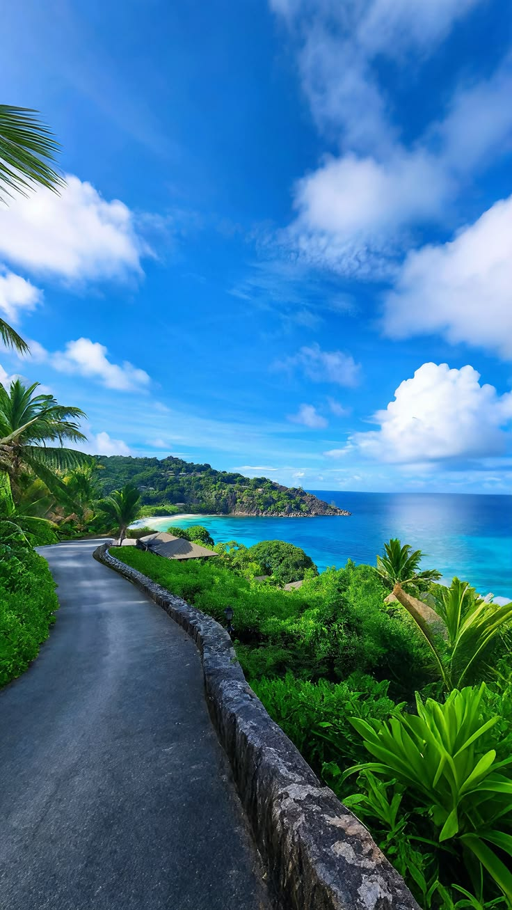
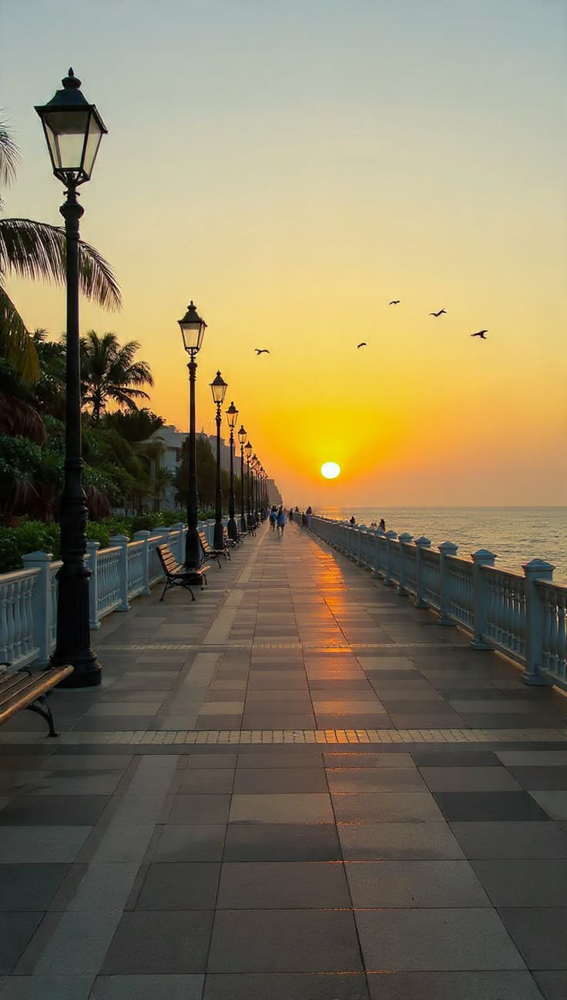
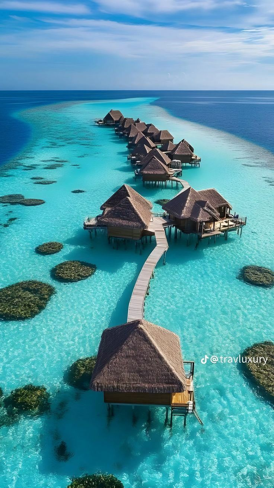
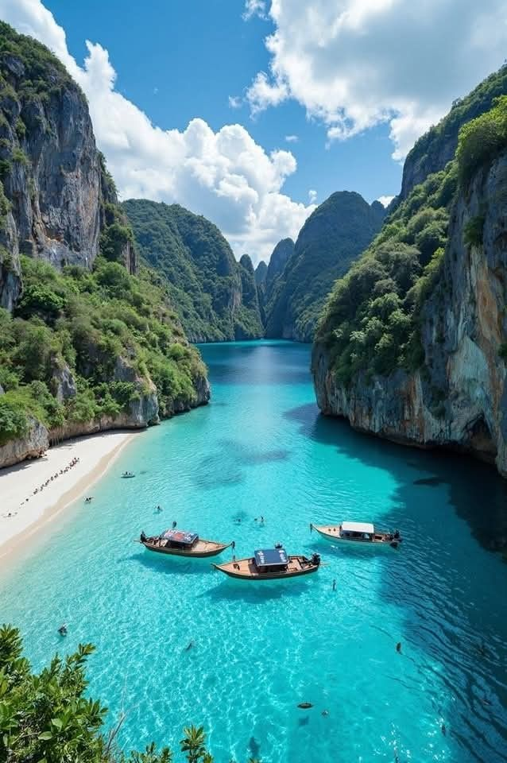

Welcome.This space is dedicated to the beauty of minimalist web design. By separating,our structure from our style,we create a cleaner experience for everyone.

The coastline here offers a breath of fresh air.It's a remainder that even in code, there is room for organic growth and natural beauty.

Golden hour on the boardwalk is a meditative experience.It's the perfect setting for a quiet evening stroll to clear the mind after a day of project managent and accounting.
Dappled sunlight through a thick canopy creates a sanctuary of green.Every trail here feels like a conversation with nature away from the noise of digital world


The rhythmic sound of the tides is world's natural metronome. This beach isn't just a vacation spot;it's where i go to reset, breathe in the salt air and find clarity.
